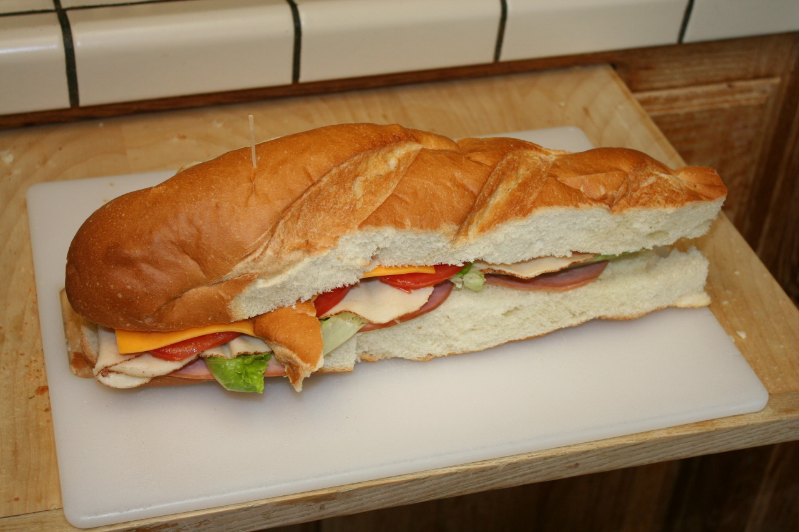

-


Onde glamour e gastronomia se encontram! Aqui, cada receita é um espetáculo, cada prato uma obra-prima, e cada mordida um passo rumo à perfeição. Prepare-se para cozinhar como uma verdadeira estrela – porque no meu palco, até a comida brilha!